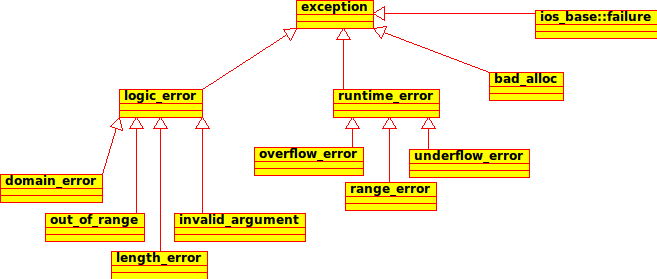

Que le programme doit-il faire lorsqu'il découvre une condition d'erreur lors de son exécution: par exemple une division par 0, ou encore l'ouverture d'un fichier inexistant (ou qui ne peut pas être lu pour un problème de permissions). Le problème est généralement le suivant: l'erreur se produit dans une bibliothèque; un objet doit ouvrir un fichier dont on lui a passé le nom en paramètres. L'objet voit bien qu'il y a une erreur (il n'a pas trouvé le fichier), mais comment doit-il réagir ? En fait, il ne le sait pas... parce que ce n'est pas à lui de réagir. C'est au programme utilisateur de l'objet: suivant les cas, la réaction de celui-ci sera soit l'arrêt du programme avec impression d'un message, soit tentative de reprise après avoir demandé à l'utilisateur un nouveau nom de fichier, soit génération automatique d'un nouveau nom de fichier, ... L'objet doit donc se borner à prévenir le programme appelant qu'il y a eu une erreur. Il y a trois moyens:
errno en C)Les deux premiers moyens présentent certains inconvénients: tout d'abord, si la fonction, dans son fonctionnement normal, doit déjà renvoyer une valeur, comment renvoyer le code d'erreur ? Par une valeur illégale peut-être, mais ce n'est pas toujours possible... ainsi une fonction qui doit renvoyer un entier ne peut renvoyer une valeur illégale. D'autre part, une bonne partie du code utilisateur risque d'être consacrée au traitement des erreurs... à condition que le programmeur ait assez de courage ou de conscience professionnelle. On estime que dans certains cas le code peut doubler simplement à cause du traitement d'erreurs. De manière plus fondamentale, on aura une totale imbrication du code de traitement d'erreurs et du code de l'application, d'où une mauvaise lisibilité du code. Le C++ offre un système d'exceptions qui améliore considérablement la situation.
Afin de bien comprendre le système des exceptions, imaginons l'administration des postes d'un pays quelconque. L'organisation est la suivante:
Il faut comprendre cette analogie de la manière suivante:
Imaginons donc le facteur, en train de distribuer le courrier. La plupart du temps, tout se passe correctement
et la mission du facteur est menée à bien. Mais quelques problèmes peuvent survenir;
par exemple, une lettre adressée à M. Dupond est notée 105 rue des Mimosas, alors que les dupond
habitent au 15 rue des Mimosas: le facteur connait le quartier, il mettra l'enveloppe dans la boîte aux lettres des
Dupond, même si l'adresse est mauvaise. Il s'agit d'un cas d'erreur qui a pu être corrigé par le facteur - par
l'objet. Rien ni personne ne sera au courant qu'il y a eu un problème avec cette enveloppe.
Autre problème possible: une lettre est adressée à M. Durand, or il n'y a pas de M. Durand
dans le quartier. Cette fois, le facteur mettra la lettre dans une boîte appelée "Adresses inconnues",
et il continuera sa tournée.
Voilà que le facteur tombe sur une lettre qui comporte la bonne adresse, mais il s'agit d'une rue
située dans un autre quartier: le facteur mettra la lettre dans une nouvelle boîte, appelée
"autres quartiers".
A la fin de sa tournée, le facteur regarde l'état de ses deux boîtes: si
elles sont vides, il rentre chez lui tout simplement. La méthode "facteur" a fait son travail sans histoire.
Si au moins l'une des deux est pleine, le facteur, avant de rentrer chez lui, va déposer à un endroit
réservé à cet usage, au bureau de postes, le ou les cartons contenant les lettres en cause: il
"lance une exception"; celle-ci sera traitée soit au niveau du bureau de poste du quartier, soit au niveau
supérieur; mais en aucun cas le facteur ne prend de décision à propos de cette lettre:
ce n'est tout simplement pas son travail.
Le bureau de poste de quartier, voyant qu'il y a une "exception", va
alors la traiter: si l'adresse située sur la lettre "autres secteurs" correspond à un secteur
géré par ce bureau de poste, il suffira de la donner à un autre facteur pour que le problème
soit résolu. L'erreur a été corrigée au niveau Bureau de Poste, et personne à un
plus haut niveau n'en saura rien. Sinon, le bureau de poste la renvoie à l'échelon supérieur
(régional) qui se chargera du problème, à moins qu'il ne le renvoie à nouveau à un
échelon supérieur...
C'est un système analogue qui est employé par le C++ pour traiter les exceptions:
Il est possible de renvoyer ainsi n'importe quel objet, et de mettre donc dans cet objet n'importe quelle information: un code d'erreur, par exemple, avec une chaîne de caractères explicative, mais aussi des données (d'autres objets, par exemple) permettant aux niveaux supérieurs de traiter effectivement l'exception.
Voici une implémentation de l'opérateur /= permettant de diviser un complexe par un flottant quelconque:
complexe& complexe::operator/=(float x) {
r /= x;
i /= x;
return *this;
}
Il n'y a ici aucun traitement d'erreur. Si on passe 0 à cette fonction, le programme va se planter, mais nous n'avons aucun moyen de récupérer la situation.
Voici une première manière d'introduire un traitement d'erreur:
complexe& complexe::operator/=(float x) {
if ( x == 0 ) throw ( "division par zéro" );
r /= x;
i /= x;
return *this;
}
La fonction se contente de "lancer" un const char*. Celui-ci sera "rattrapé" par une fonction située dans la pile d'appels (c'est-à-dire
la fonction appelante, ou la fonction ayant appelé la fonction appelante, etc.) par exemple la fonction main, dont voici une première implémentation:
int main() {
complexe c(5,6);
try
{
float x;
cout << "Entrez un diviseur: ";
cin >> x;
c /= x;
}
catch ( const char * c )
{
cout << c << "\n";
}
return 0;
}
La fonction main a "attrapé" l'objet envoyé (ici un const char *) et l'a simplement affiché. La version suivante va plus loin: elle
demande à l'utilisateur de rentrer une valeur jusqu'à ce que celle-ci soit différente de 0.
int main() {
complexe c(5,6);
do
{
try
{
float x;
cout << "Entrez un diviseur: ";
cin >> x;
c /= x;
break;
}
catch ( const char * msg )
{
cout << msg << " Recommencez\n";
}
} while (true);
return 0;
}
On voit donc ici que si le traitement de l'erreur (dans la fonction main) a changé, la génération de l'erreur, elle, est la même. Le code suivant montre
une troisième manière de procéder: tout le traitement d'erreur se fait ici au niveau de la fonction input_et_divise:
void input_et_divise(complexe& c) {
do
{
try
{
float x;
cout << "Entrez un diviseur: ";
cin >> x;
c /= x;
break;
}
catch ( const char * msg )
{
cout << msg << " Recommencez\n";
}
} while (true);
}
int main() {
complexe c(5,6);
input_et_divise(c);
cout << "Partie reelle : " << c.get_r() << "\n";
cout << "Partie imaginaire: " << c.get_i() << "\n";
}
Plutôt que d'envoyer directement des chaines de caractère, il est beaucoup plus riche d'encapsuler ces messages dans des objets. On peut bien sûr définir ses propres exceptions, mais il est bien plus simple d'utiliser les exceptions déjà définies dans la bibliothèque standard du C++. Si vous préférez définir des objets exceptions, faites-les dériver de l'une de ces classes (ne serait-ce que la classe exception).
La figure ci-dessous montre les différentes exceptions définies dans la bibliothèque standard, anisi que les liens d'hritage qui les relient.
La classe de base (exception) possède une méthode abstraite: what(), qui renvoie le message d'erreur encapsulé par l'objet.
Lors du throw, on pourra donc générer un message d'erreur suffisamment précis pour que le diagnostic de l'erreur soit aisé.

| Nom | Dérive de | Constructeur | Signification |
|---|---|---|---|
| exception | exception() | Toutes les exceptions dérivent de cette classe | |
| bad_alloc | exception | bad_alloc() | Problème d'allocation mémoire, peut être lancée par l'opérateur new |
| ios_base::failure | exception | failure(const string&) | Problème d'entrées-sorties, peut être lancée par les fonctions d'entrées-sorties |
| runtime_error | exception | runtime_error(const string&) | Erreurs difficiles à éviter, en particulier dans des programmes de calcul. |
| range_error | runtime_error | range_error(const string&) | Erreur dans les valeurs retournées lors d'un calcul interne |
| overflow_error | runtime_error | overflow_error(const string&) | Dépassement de capacité lors d'un calcul (nombre trop gros) |
| underflow_error | runtime_error | underflow_error(const string&) | Dépassement de capacité lors d'un calcul (nombre trop proche de zéro) |
| logic_error | exception | logic_error(const string&) | Erreur dans la logique interne du programme (devraient être évitables) |
| domain_error | logic_error | domain_error(const string&) | Erreur de domaine (au sens mathématique du terme). Exemple: division par 0 |
| invalid_argument | logic_error | invalid_argument(const string&) | Mauvais argument passé à une fonction |
| length_error | logic_error | length_error(const string&) | Vous avez voulu créer un objet trop gros pour le système (par exemple une chaîne plus longue que std::string::max_size() |
| out_of_range | logic_error | out_of_range(const string&) | Par exemple: "index inférieur à 0" pour un tableau |
Il est très simple d'utiliser ces exceptions dans votre programme. L'opérateur précédent peut être réécrit de la manière suivante:
complexe& complexe::operator/=(float x) {
if ( x == 0 ) {
domain_error e ("division par zero" );
throw (e);
}
r /= x;
i /= x;
return *this;
}
ou encore, de manière plus concise:
complexe& complexe::operator/=(float x) {
if ( x == 0 ) {
throw domain_error( "division par zero" );
}
r /= x;
i /= x;
return *this;
}
Le traitement d'erreur première manière s'écrira cette fois:
int main() {
complexe c(5,6);
try
{
float x;
cout << "Entrez un diviseur: ";
cin >> x;
c /= x;
}
catch ( exception & e )
{
cout << e.what() << "\n";
}
return 0;
}
Le traitement d'erreur troisième manière s'écrira comme indiqué ci-dessous. Si une exception de type domain_error est attrapée
par la fonction input_et_divise, elle la traite. Si une autre exception dérivant du type générique exception est émise,
elle ne sera pas attrapée par input_et_divise, mais elle sera traitée de manière générique par main.
void input_et_divise(complexe& c) {
do
{
try
{
float x;
cout << "Entrez un diviseur: ";
cin >> x;
c /= x;
break;
}
catch ( const domain_error& e )
{
cout << e.what() << " Recommencez\n";
}
} while (true);
}
int main() {
complexe c(5,6);
try
{
input_et_divise(c);
cout << "Partie reelle : " << c.get_r() << "\n";
cout << "Partie imaginaire: " << c.get_i() << "\n";
}
catch ( const exception& e )
{
cout << e.what() << "\n";
}
}
 En
fait, plusieurs programmes de capture d'exceptions auraient pu être
écrits, suivant la finesse avec laquelle on veut traiter les
exceptions:
En
fait, plusieurs programmes de capture d'exceptions auraient pu être
écrits, suivant la finesse avec laquelle on veut traiter les
exceptions:
domain_errorlogic_errorexception. Il est donc important de passer l'objet exception par
Il est donc important de passer l'objet exception par const exception &,
afin de s'assurer que le bon objet sera au final utilisé (notamment la bonne version
de la fonction what()).
Il est plus simple d'utiliser les exception prédéfinies, néanmoins il est possible de redéfinir
ses propres exception. Dans ce cas, il est
important de les définir de manière hiérarchique, et
de préférence comme des classes dérivées de la classe
exception. Cela permet en effet le traitement
hiérarchisé des exceptions, ainsi qu'on vient de le voir.
Que se passe-t-il si une exception
bad_alloc est générée ? Elle ne sera pas traitée: à la place,
elle sera transmise à nouveau à la fonction appelante, et ainsi de suite jusqu'à main.
Si main ne prévoit aucune capture
d'exception, l'exception se terminera par un arrêt du programme. Il est cependant possible de prévoir simplement
un traitement d'erreur pour les exceptions non prévues:
try {
blabla
}
catch (const & domain_error e) {
blabla
}
catch (const & bad_alloc e) {
blabla
}
catch (...) {
cout << "Autre exception\n";
};
}
Pour ajouter le nom du fichier et le numéro de la ligne, c'est un peu plus compliqué, parce que la macro __LINE__ qui renvoie le numéro de ligne renvoie un entier, alors que nous avons besoin d'une string. On peut toutefois s'en sortir avec deux macros (voir par exemple ici pour des explications plus complètes sur la nécessité de passer par deux macros):
#include <stdexcept> #define STRINGIFY(x) #x #define TOSTRING(x) STRINGIFY(x) #define AT __FILE__ ":" TOSTRING(__LINE__) ... string msg = "ERREUR - division par 0 - Fichier "; msg += AT; throw(runtime_error(AT));
Contrairement à java, python ou perl, Il n'est pas évident d'afficher la pile d'appels lorsqu'une exception est générée: le C++ est un langage complé, et les symboles sont en général absents de l'exécutable. La manière la plus évidente de procéder est d'utiliser le programme à travers un débogueur (gdb par exemple); il est possible d'afficher la pile d'appels sans passer par le débogueur. Cependant, cela nécessite de faire appel à des primitives système, qui dépendent du compilateur: ce code ne sera par définition pas portable.
Le programme suivant, que vous pouvez télécharger et utiliser dans vos propres applications, vous offre une solution à ce problème, utilisable exclusivement avec gcc sous unix. On a défini une nouvelle exception, qui dérive de runtime_error, et qui formatte la pile d'appels dans son constructeur, de sorte que la pile d'appels est automatiquement affichée lors de l'exécution de la méthode what(). Cet objet repose sur les fonctions suivantes, de la bibliothèque de gnu:
Le programme peut être téléchargé ici:
Le système des exceptions est le système de
traitement d'erreurs à employer pour des constructeurs d'objet,
à l'exclusion de tout autre: on pourrait par
exemple imaginer une variable err qui indiquerait que
l'objet est construit, certes, mais dans un état "bizarre", donc pas
vraiment utilisable. C'est ce qu'on appelle les "objets zombies"...
cela peut conduire à des comportements inattendus (variables internes
non initialisées, par exemple), à moins que l'objet soit suffisamment
bien écrit pour que toutes les fonctions-membres testent la valeur de
err afin de s'assurer que l'objet n'est pas un
zombie... Par contre, si le constructeur est interrompu par une exception, l'objet ne sera pas
construit du tout... Or, un vrai mort vaut mieux qu'un faux zombie, qui
ira prétendre le contraire ?
Le système des exceptions est le système de
traitement d'erreurs à ne pas employer avec les destructeurs:
en effet, un destructeur peut être appelé lors du déroulement normal
du programme; mais il peut aussi être appelé lors de la génération
d'une autre exception. Dans ce cas, le programme sera
immédiatement arrêté.
Evidemment, rien n'empêche un destructeur
d'appeler des fonctions qui, elles, sont suceptibles de générer une
exception. Mais dans ce cas, ces appels de fonction doivent être
encadrés par des blocs try...catch, et aucune
exception ne doit s'échapper du destructeur. Cela signifie que
les destructeurs, s'ils ont une erreur à faire remonter, devront
trouver un autre système. Par exemple écrire sur une fenêtre ou dans
un fichier de log.
Cette dissymétrie peut paraître surprenante à
première vue... mais en fait, en informatique comme dans la vie, il
est bien plus simple de détruire que de construire: on peut avoir du mal à construire une maison, rien ne devrait
pouvoir vous empêcher de la détruire... De même, le constructeur peut
rencontrer un grand nombre de problèmes (ressources impossibles à
trouver, par exemple), mais normalement le destructeur ne devrait
pas générer d'erreur... ou alors, c'est grave, car cela signifie
que le système refuse de récupérer une ressource.
Si une fonction ne peut pas générer d'exceptions, il est important de le signaler: cela se fait par l'utilisation du mot-clé noexcept qui se place dans la déclaration du prototype, à la fin de celui-ci:
void ma_fonction(float x) noexcept;
Pourquoi est-ce important ? Cela ne changera rien à la logique de votre code, mais cette mention informe le compilateur qu'il a le droit d'utiliser certaines optimisations, sans casser le déroulement du code.
En particulier il est très important d'utiliser noexcept lorsque vous déclarez un opérateur de déplacement ou un constructeur de déplacement  .
.

 Emmanuel Courcelle <emmanuel.courcelle@inp-toulouse.fr>
Emmanuel Courcelle <emmanuel.courcelle@inp-toulouse.fr>